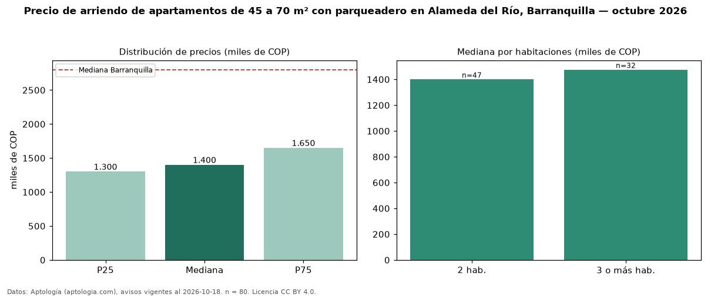

Precio de arriendo de apartamentos de 45 a 70 m² con parqueadero en Alameda del Río, Barranquilla — octubre 2026
COP 1,40 millones al mes es el canon mediano de apartamentos de 45 a 70 m² con parqueadero en arriendo en Alameda del Río, Barranquilla (n = 80 avisos). Frente a la mediana de los apartamentos de 45 a 70 m² en arriendo de Alameda del Río (COP 1,35 millones, n = 219), queda 4 % por encima; este segmento reúne el 37 % de esos avisos. Por metro cuadrado, la mediana es COP 25.000/m² al mes (n = 80), 2 % por encima de los apartamentos de 45 a 70 m² en arriendo de Alameda del Río (COP 24.627/m²). El área mediana anunciada es 57 m². El segmento con más oferta es el de 2 habitaciones (47 avisos, mediana COP 1,40 millones); pasar de 2 habitaciones a 3 o más habitaciones cambia la mediana +5 %. La administración mediana declarada es COP 215.000 al mes (n = 35), aparte del canon. El estrato más frecuente es 3 (68 % de los avisos con estrato). La mediana de todos los apartamentos en arriendo de Barranquilla es COP 2,80 millones (−50 % de diferencia). Datos: Aptología (aptologia.com), CC BY 4.0 — https://www.aptologia.com/arriendo/barranquilla/alameda-del-rio. Archivos: PDF, CSV con las cifras y gráfica PNG.

| Avisos únicos | 80 |
|---|---|
| Percentil 25 | COP 1.300.000 |
| Mediana | COP 1.400.000 |
| Percentil 75 | COP 1.650.000 |
| Mediana por m² | COP 25.000 |
Fuente: avisos vigentes de portales inmobiliarios recopilados por Aptología, deduplicados (mínimo 30 avisos únicos por celda). Precios pedidos, no cerrados. Fecha: 2026-10-18.